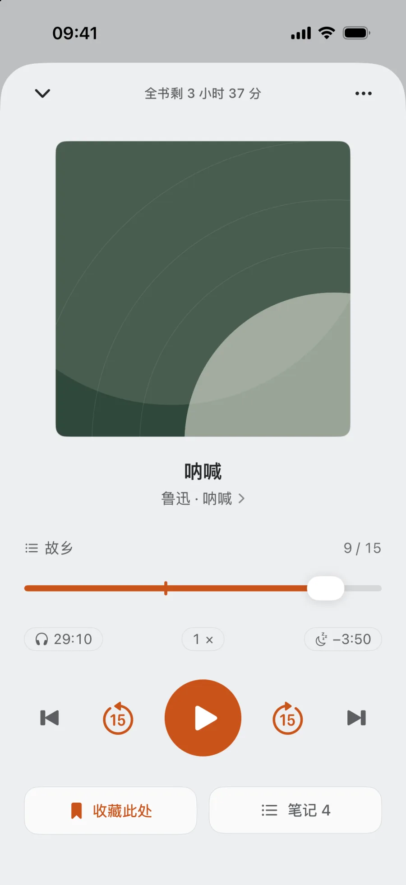
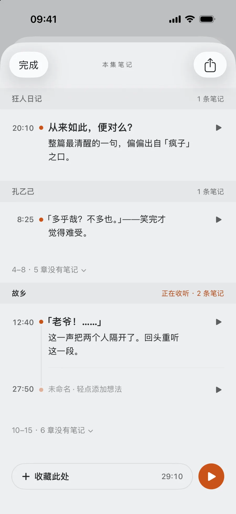

耳记 EarMemo › BookPlayer 替代：能记笔记
想找能记笔记的 BookPlayer 替代？先看这份老实对比
BookPlayer 用得顺手，就继续用。它免费、开源，有 CarPlay、Apple Watch 和智能回退（Smart Rewind），而且书签上本来就能写备注，还能导出成文本文件。
笔记才是重点的时候，再考虑耳记：按一下 AirPods 就打点、不用掏手机（点打在 2 秒前），接着听；每条笔记归在自己的章节下、标在进度条上；导出的 Markdown 同时写章内时间和全书时间。不需要账号，没有 App 服务器，没有统计。它没有 CarPlay、没有 Watch App、没有智能回退，免费版有额度，Pro 一次买断。
放在一起看
App Store 上 BookPlayer 是 6.0.1，耳记是 1.8。两个都能播带章节的无 DRM m4b 和 mp3，按书分别记进度，都有睡眠定时、变速、锁屏控制和 Siri。下表只列去掉这些共同点之后剩下的部分。
| BookPlayer | 耳记 | |
|---|---|---|
| 价格 | 免费。云同步要订阅 BookPlayer Pro：美区每月 4.99 美元或每年 49.99 美元 | 免费版有额度：同时听 1 张专辑、共 10 条音频、5 条笔记可写字。耳记 Pro 一次买断：美区 7.99 美元，中国区 48 元 |
| 书签上写备注 | 能：打完书签点「添加注释」，或用 Siri | 能：每个标记都能写字，写的时候播放不停 |
| 用耳机按键打书签 | 不能：耳机上的下一首 / 上一首是快进 / 快退 | 能，在设置里打开后：下一首或上一首改成「收藏此处」，打上时响一声提示音 |
| 点打在哪 | 按下的那一秒 | 按下前 2 秒；之后还能 ±2 秒微调 |
| 带章节的书里，笔记放在哪 | 每本书一个书签列表 | 归在各自的章节下，同时在进度条上标出来 |
| 导出笔记 | 纯文本（.txt），带章节和章内时间。免费 | Markdown（.md）：单条、整本或整张专辑合并，写章内时间和全书时间。Pro |
| CarPlay | 有 | 没有 |
| Apple Watch | 有；不带手机单独播放要用云同步 | 没有 |
| 暂停后智能回退 | 有 | 没有 |
| 多设备同步 | 云同步，需 Pro | 没有。数据跟着你自己的 iCloud 设备备份走 |
| 从 Jellyfin / Audiobookshelf 流式听 | 能 | 不能。只播存进设备的文件 |
| 电脑浏览器 Wi-Fi 传文件 | 能 | 能 |
| 账号 | 可选，通过 Apple 登录 | 没有 |
| 收集的数据 | 崩溃和性能数据（Sentry）。App Store 标签：与你身份不关联的数据 | 不收集。App Store 标签：不收集数据 |
| 开源 | 是，GPL-3.0 | 否 |
| 当前版本最低系统 | iOS 26 | iOS 17 |
来源：BookPlayer 的 App Store 页面、它的隐私政策、GitHub 上的源代码。
BookPlayer 已经能做的——不少「替代推荐」写错了
如果你是因为觉得 BookPlayer 不能记笔记才想换，先再看一眼：打完书签，BookPlayer 会给出「添加注释」；用 Siri 打书签时它会开口问你要记什么；书签列表可以分享成一个 .txt 文件，每条备注排在自己的章节下。6.0 起它也能从电脑浏览器经 Wi-Fi 传书。这些都不是换 App 的理由。
真正的理由窄得多，全在「笔记怎么嵌进听的过程」上。
耳记不一样的地方
- 不掏手机就能打点。在「设置 → 耳机按键」里把「下一首」设成「收藏此处」，之后在 AirPods Pro 上按两下，就在当前这一秒打上标记，响一声提示音，书照常往下播。其他耳机用发「下一首 / 上一首」的那个键；车载方向盘按键也跟着这个设置走。在 BookPlayer 里，这几个键是快进快退。
- 点打在那句话开头。人总是慢半拍才反应过来，所以耳记把标记打在按下前 2 秒，之后还能前后各调 2 秒。
- 笔记长在书里。带章节的 m4b，每条笔记归在自己的章节下，连续没有笔记的章节折成一行。每条笔记在进度条上是一个橙色刻度，点一下，刻度上方冒出这条笔记的标题。
- 回顾完接着听。点笔记重听那一段，关掉笔记页，就回到刚才听到的地方。
- 导出的是 Markdown，不是一堆纯文本。Pro 导出带标题层级，写章内时间和全书时间，直接放进 Obsidian 或任何 Markdown 编辑器——见导出样例。
- 没有要登录的，也不收集什么。没有账号，没有 App 服务器，没有统计，没有崩溃上报。怎么从 App 外面自己核实，见耳记会把我的数据发出去吗？


从 BookPlayer 把书搬过来
- 找到文件。BookPlayer 存在手机上的书，在「文件」App 的「我的 iPhone › BookPlayer」里。
- 导入耳记。在耳记里选「导入文件夹」，选那本书的文件夹；一个文件夹进来就是一张专辑，顺序不乱。也可以用 Wi-Fi 传输从电脑拖进来。
- 每本书从你听到的地方开始。播放进度和书签留在 BookPlayer 里，耳记读不到。拖到你听到的位置一次，之后耳记会一直记着。
不一定要二选一。两个 App 读的是同一批无 DRM 文件，开车用 BookPlayer、想记笔记的书用耳记，这样搭着用的人不少。
其他选择
如果你换 App 不是为了笔记，那多半不该换成耳记。Bound（付费）能从 Dropbox、OneDrive 导入，也有 CarPlay。按你最需要的那一条挑播放器，见在 iPhone 上听自己的 m4b / mp3 有声书；记笔记的方法本身，见听有声书怎么记得住。
什么情况下不该选耳记
- 你开车用 CarPlay 听，或者用 Apple Watch 听。耳记两样都没有，继续用 BookPlayer。
- 你要多设备同步书库，或者从 Audiobookshelf、Jellyfin 流式听。耳记只播设备上的文件，这是设计如此。
- 你要全部免费、不设额度。BookPlayer 的播放器是免费的。耳记免费版同时只能听一张专辑，5 条笔记可以写字。
- 你离不开智能回退。耳记暂停之后不会自动往回倒。
- 你的书是在 Audible 或 Apple Books 买的。那些带 DRM，两个 App 都打不开。
常见问题
有什么能记笔记的有声书播放器可以替代 BookPlayer？
如果换 App 就是为了笔记，可以用耳记：按一下 AirPods 就打点、不用掏手机，书接着播的时候就能写，笔记按章节分段、标在进度条上，还能导出带章内时间和全书时间的 Markdown（Pro）。如果你需要 CarPlay、Apple Watch 或云同步，继续用 BookPlayer。
BookPlayer 的书签能写备注吗？
能。打完书签 BookPlayer 会给出「添加注释」，用 Siri 打书签时也会问你要记什么；书签列表可以分享成 .txt 文件，每条备注带着章节和时间。
BookPlayer 能用 AirPods 打书签吗？
耳机按键不行：在 BookPlayer 里，耳机的下一首 / 上一首是快进 / 快退。可以在播放页、用 Siri 或快捷指令、或在 CarPlay 上打书签。耳记可以把下一首或上一首设成「收藏此处」，按一下 AirPods 就打点，并响一声提示音。
能把 BookPlayer 的书库和书签搬到耳记吗？
音频文件可以：BookPlayer 把它们存在「文件」App 的「我的 iPhone › BookPlayer」里，耳记可以从那里导入文件夹。播放进度和书签搬不过来，耳记读不了 BookPlayer 的数据库。
耳记和 BookPlayer 一样免费吗？
不完全一样。耳记免费下载，免费版长期有效：同时听一张专辑、共 10 条音频，标记不限，其中 5 条可以写字。耳记 Pro 一次买断，美区 7.99 美元、中国区 48 元，没有订阅。BookPlayer 的播放器免费，它的 Pro 订阅加的是云同步。
耳记有 CarPlay 或 Apple Watch 吗？
都没有。主要在车上或用手表听的话，BookPlayer 更合适。
BookPlayer 和耳记哪个更注重隐私？
耳记什么都不收集：没有账号、没有 App 服务器、没有统计、没有崩溃上报，App Store 标签是「不收集数据」。按 BookPlayer 的隐私政策，它对所有用户通过 Sentry 收集崩溃和性能数据；登录并订阅 Pro 后，书库、进度和书签会存到它的服务器上用于同步。